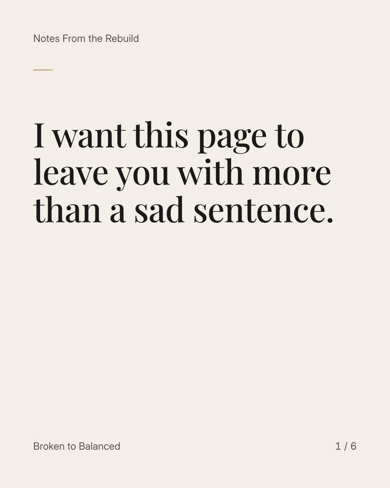
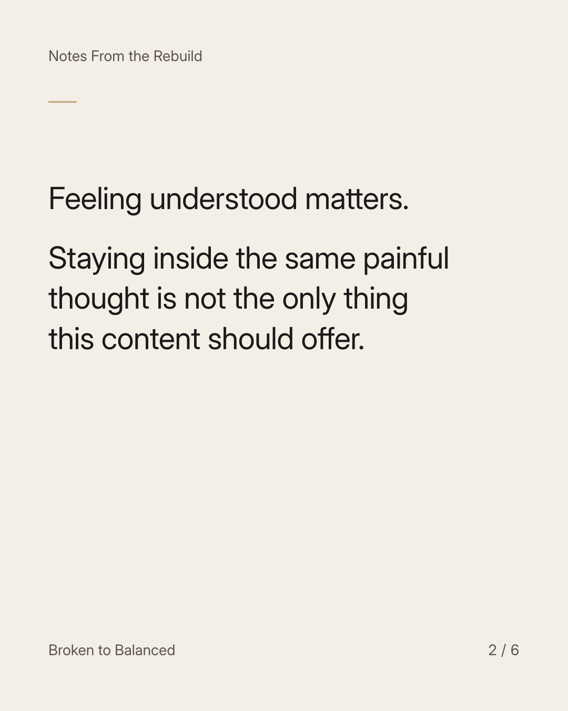
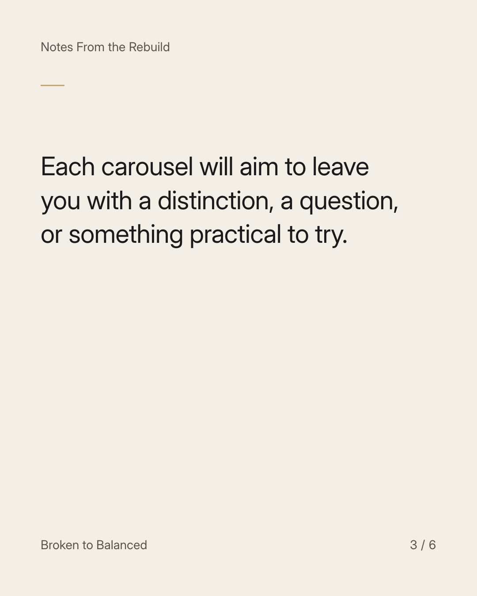
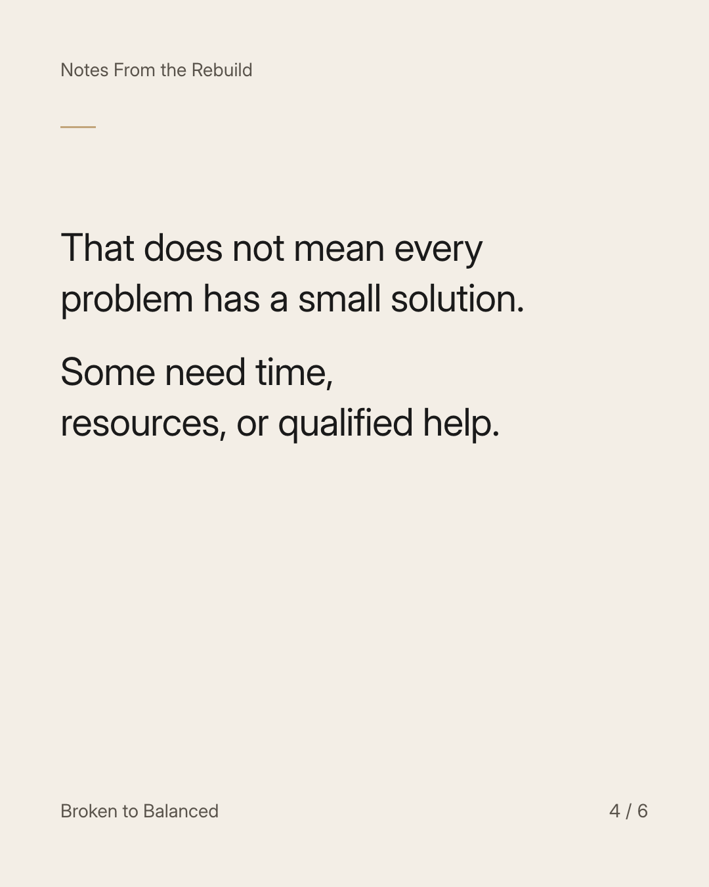
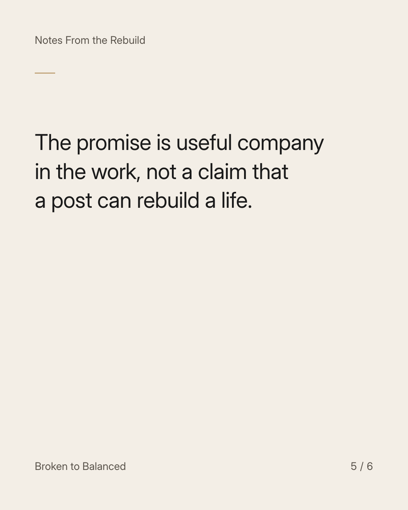
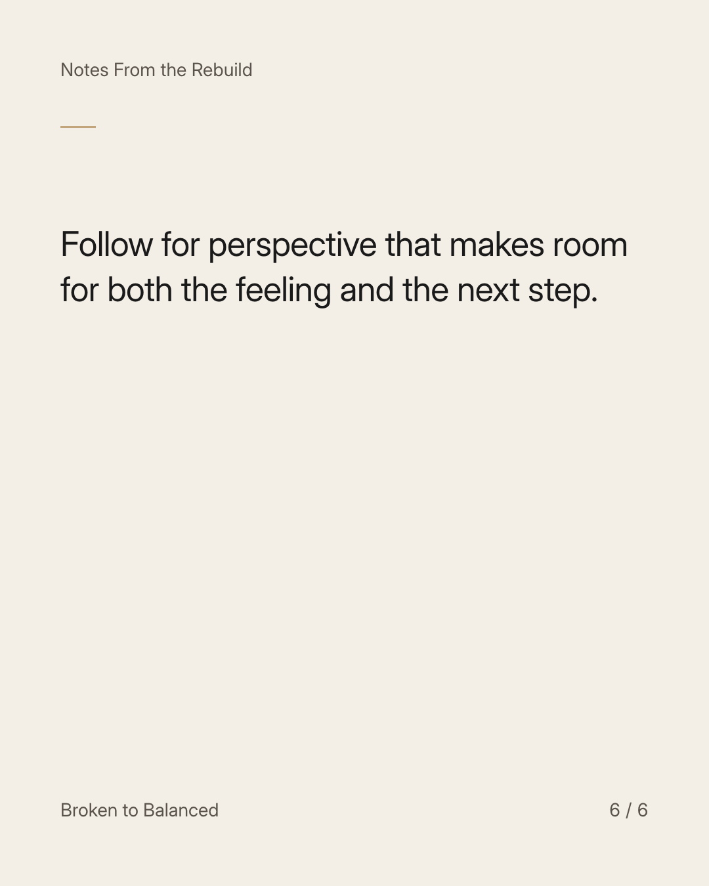

Exact text and accessibility text
I want this page to leave you with more than a sad sentence.
Slide 1 of 6. I want this page to leave you with more than a sad sentence.


Exact text and accessibility text
Feeling understood matters. Staying inside the same painful thought is not the only thing this content should offer.
Slide 2 of 6. Feeling understood matters. Staying inside the same painful thought is not the only thing this content should offer.


Exact text and accessibility text
Each carousel will aim to leave you with a distinction, a question, or something practical to try.
Slide 3 of 6. Each carousel will aim to leave you with a distinction, a question, or something practical to try.


Exact text and accessibility text
That does not mean every problem has a small solution. Some need time, resources, or qualified help.
Slide 4 of 6. That does not mean every problem has a small solution. Some need time, resources, or qualified help.


Exact text and accessibility text
The promise is useful company in the work, not a claim that a post can rebuild a life.
Slide 5 of 6. The promise is useful company in the work, not a claim that a post can rebuild a life.


Exact text and accessibility text
Follow for perspective that makes room for both the feeling and the next step.
Slide 6 of 6. Follow for perspective that makes room for both the feeling and the next step.
Exact caption
Plain-text fallback: select and copy the caption.